Heaps
Liting Zhang
University of West Florida
Outline
Heap concept: complete binary tree, heap property, max-heap vs min-heap
Heap operations: insert and remove with percolation
Array representation: why arrays work, parent and child index formulas
Percolation algorithms: percolate-up and percolate-down code
Heapify: building a heap from an unsorted array in O(n)
Heapsort: O(n log n) in-place sorting with heaps
Priority queue: mapping enqueue and dequeue onto heap operations
Learning Goals
After this lecture, you should be able to
Define the heap property and distinguish max-heap from min-heap
Trace insert and remove step by step and explain why each step is necessary
Map any heap tree to an array using parent and child index formulas
Read and explain the percolate-up and percolate-down algorithms
Trace heapify on an example and explain why it runs in O(n)
Trace heapsort and explain why the result is sorted
Explain how a heap implements a priority queue and which variant to use
What Is a Heap?
A heap is a tree-based data structure optimized for fast access to the maximum or minimum element
Not fully sorted: only the root is guaranteed to be the max (or min)
Weaker than a sorted structure: but much cheaper to maintain
Applications: scheduling, simulation, priority management, heapsort
A heap is always a complete binary tree with one additional ordering rule
Complete Binary Tree
A heap must be a complete binary tree: this shape gives heaps their O(log N) guarantee
Every level except possibly the last is fully filled
The last level fills from left to right, with no gaps
A complete binary tree with N nodes always has height ⌊log₂ N⌋
This bounded height means percolation never takes more than O(log N) steps
The no-gap property allows the entire tree to be stored in a flat array
The Heap Property
The heap property is a local ordering rule between each node and its children
Max-heap property: every node's key ≥ its children's keys
Min-heap property: every node's key ≤ its children's keys
The property must hold at every node, not just the root
It does not impose any ordering between nodes in different subtrees
As a result, the max (or min) is always at the root, accessible in O(1)
Max-Heap
Each node's key ≥ both children's keys
The root always holds the maximum key
The ordering holds along any root-to-leaf path
No guarantee between nodes in different subtrees
Used when the largest item has the highest priority
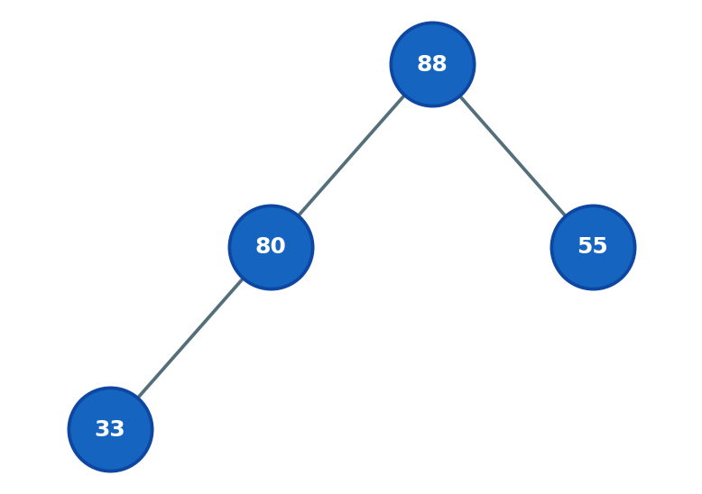
Min-Heap
Each node's key ≤ both children's keys
The root always holds the minimum key
Mirror image of a max-heap: only the comparison direction changes
Used when the smallest item has the highest priority
Example: tech support queue: ticket 1 is served before ticket 10; dequeue removes the minimum in O(log N)
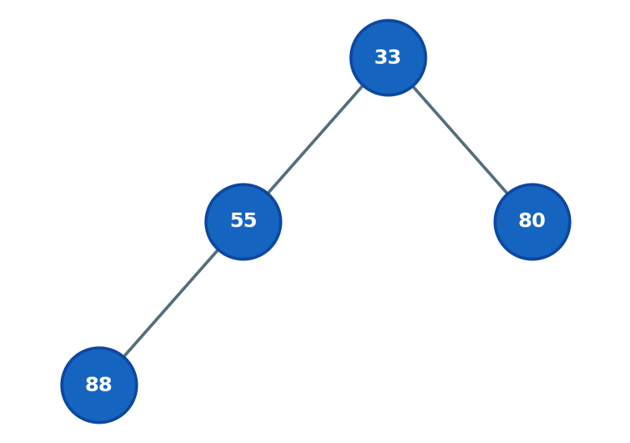
Insert Overview
Two invariants must hold at all times: complete binary tree shape and heap property
Step 1: preserve shape
- add new node at the next available position on the bottom level, left to right
Step 2: restore heap property:
- new node may be larger than its parent, so percolate up
- Percolate up: repeatedly swap the node with its parent while it is larger than its parent
Stop when node ≤ its parent, or when it reaches the root
Cost: O(log N): at most one swap per level of the tree
Insert Example: Initial Heap
Current heap:
[88, 80, 55, 33]88 is at the root, the current maximum
Heap property holds at every node
Goal: insert the value 90
![Initial max-heap [88, 80, 55, 33]](../_static/images/heap/insert_01_initial.png)
Insert Example: Add at Last Position
Place 90 at index 4 (right child of 80): shape preserved
Current heap:
[88, 80, 55, 33, 90]Problem: 90 > 80 (parent at index 1): heap property violated
Begin percolating 90 upward
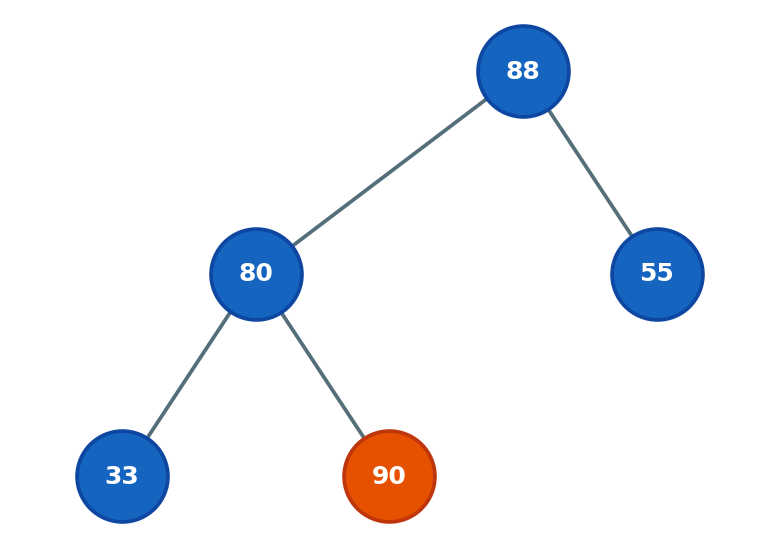
Insert Example: Swap 90 and 80
90 > 80 (parent): swap: 90 moves to index 1, 80 to index 4
- Swap: 90 moves to index 1, 80 to index 4
- Current heap:
[88, 90, 55, 33, 1] Check again: 90 > 88 (new parent at index 0)
Heap property still violated: continue percolating up
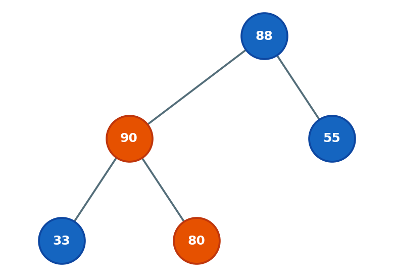
Insert Example: Swap 90 and 88 (Done)
90 > 88 (parent):
- Swap: 90 moves to root (index 0)
- Current heap:
[90, 88, 55, 33, 1] 90 is now at the root: no parent to compare with, stop
Heap property holds at every node. Insert complete.
Total: 2 swaps for a 5-node heap (height = 2)
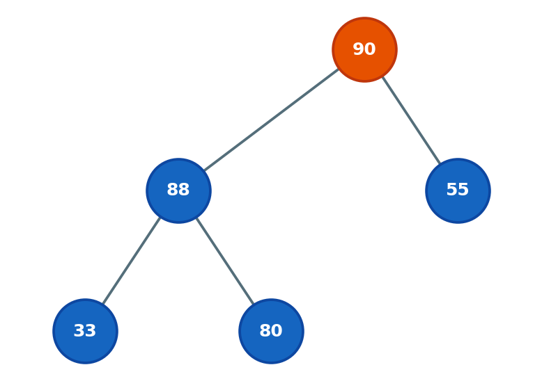
Remove Overview
Remove always targets the root (the maximum). The root cannot simply be deleted.
Why not delete the root directly?: the tree would split into two disconnected subtrees
Step 1: preserve shape: copy the last node's value to the root, then delete the last node
Step 2: restore heap property: new root value is likely too small, so percolate down
Percolate down: repeatedly swap with the larger child until node ≥ both children
Cost: O(log N): at most one swap per level
Remove Example: Initial Heap
Current heap:
[90, 88, 55, 33, 80]90 is at the root: the value to be removed and returned
Last node is 80 at index 4
Plan: copy 80 to root, delete index 4, then sift down
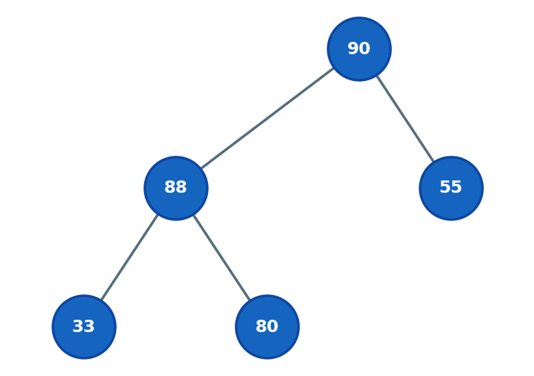
Remove Example: Copy Last Node to Root
80 is copied to root; index 4 is deleted: shape preserved
- Current heap:
[80, 88, 55, 33] Problem: 80 < 88 (left child): heap property violated at root
Begin percolating 80 downward
Remove Example: Percolate Down (Done)
Children of root:
- 88 (left) and 55 (right): larger child is 88
80 < 88: swap: 88 moves to root, 80 moves to index 1
- swap: 88 moves to root, 80 moves to index 1
- Current heap:
[88, 80, 55, 33] 80's only child is 33:
- 80 > 33, heap property holds. Stop.
Heap restored. 88 is the new maximum at the root.
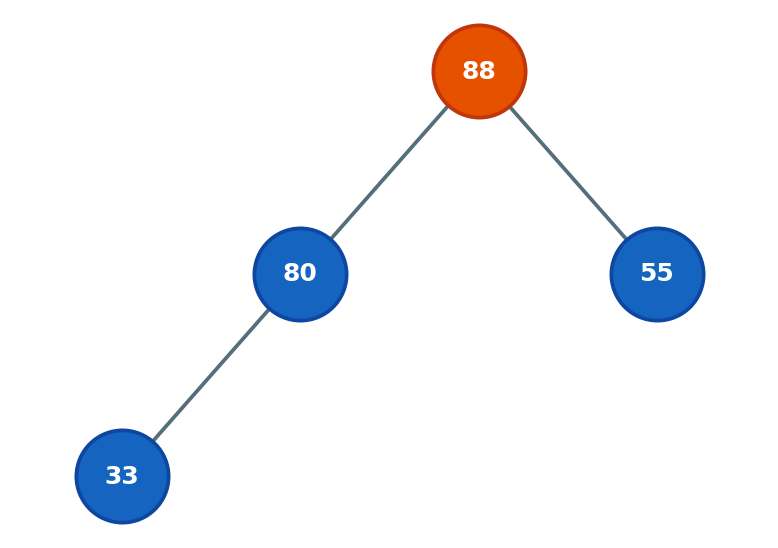
Why Use an Array?
Heaps are stored in flat arrays, not with pointer-based node structs
No gaps: a complete binary tree fills each level left to right, so no index is wasted
No pointer overhead: no
left,right, orparentfields neededLevel-order mapping: number nodes top to bottom, left to right, starting at index 0
Navigation by arithmetic: parent and child indices computed from formulas alone
Better cache performance than pointer-based trees
Level-Order Indexing
Root is at index 0
Left child of node i: index 2i + 1
Right child of node i: index 2i + 2
Parent of node i: index ⌊(i − 1) / 2⌋
Leaf nodes occupy indices ⌊N/2⌋ through N − 1
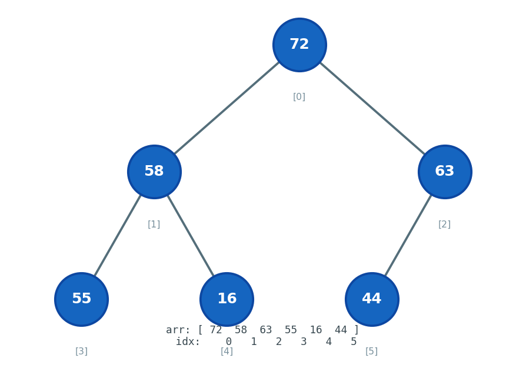
Parent and Child Index Reference
| Node index | Parent index | Child indices |
|---|---|---|
| 0 (root) | N/A | 1, 2 |
| 1 | 0 | 3, 4 |
| 2 | 0 | 5, 6 |
| 3 | 1 | 7, 8 |
| i | ⌊(i − 1) / 2⌋ | 2i + 1 and 2i + 2 |
These formulas replace all pointer navigation: no
node->leftornode->rightLeaf nodes have no children: their child indices would be ≥ N
Percolate Up (Max-Heap)
// nodeIndex = index of newly inserted node
while (nodeIndex > 0) {
int p = (nodeIndex - 1) / 2;
if (arr[nodeIndex] <= arr[p])
break; // heap property holds
swap(arr[nodeIndex], arr[p]);
nodeIndex = p; // move up one level
}nodeIndex > 0: stop when we reach the root<=condition: stop as soon as node ≤ parentnodeIndex = p: follow node upward after each swapAt most O(log N) swaps: one per level
Percolate Down (Max-Heap)
void siftDown(int arr[], int n, int i) {
while (true) {
int l = 2*i+1, r = 2*i+2;
int largest = i;
if (l < n && arr[l] > arr[largest]) largest = l;
if (r < n && arr[r] > arr[largest]) largest = r;
if (largest == i) break; // heap property holds
swap(arr[i], arr[largest]);
i = largest; // follow node down
}
}largest = i: assume current node is in the right placeCheck both children; track the larger one in
largestif (largest == i) break: no child is larger, donei = largest: follow the displaced node downward
What Is Heapify?
Heapify converts an unsorted array into a valid max-heap in-place
Naive approach: call insert N times: O(N log N) total
Heapify approach: apply sift-down to every internal node, bottom-up: O(N) total
Leaf nodes (indices ⌊N/2⌋ through N − 1) are already valid one-node heaps: skip them
Start at the last internal node (index ⌊N/2⌋ − 1) and work back to the root
After each sift-down call, the subtree rooted at that node becomes a valid heap
Heapify Example: Input Array
Input:
[77, 55, 92, 67, 98, 24, 42], N = 7Last internal node: ⌊7/2⌋ − 1 = index 2 (node 92)
i = 2: children are 24 and 42: both smaller, no swap
Move to i = 1
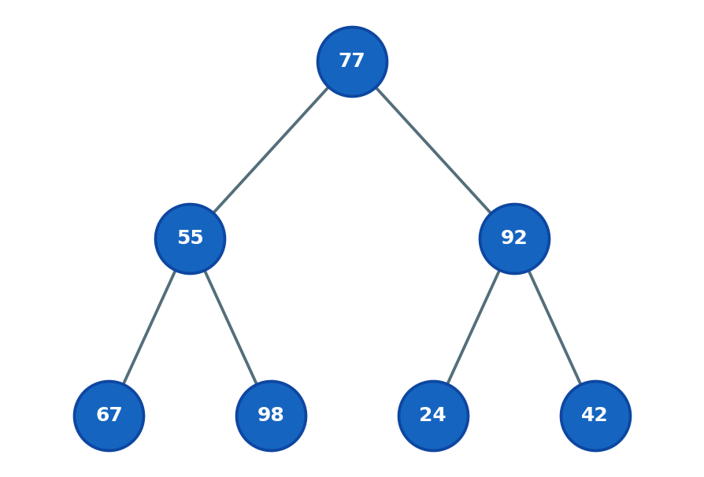
Heapify Example: Process i = 1
i = 1 (node 55): children are 67 (index 3) and 98 (index 4)
Largest child is 98: 98 > 55, swap 55 and 98
55 moves to index 4: it is a leaf, sift-down stops
Subtree at index 1 is now a valid heap
Move to i = 0
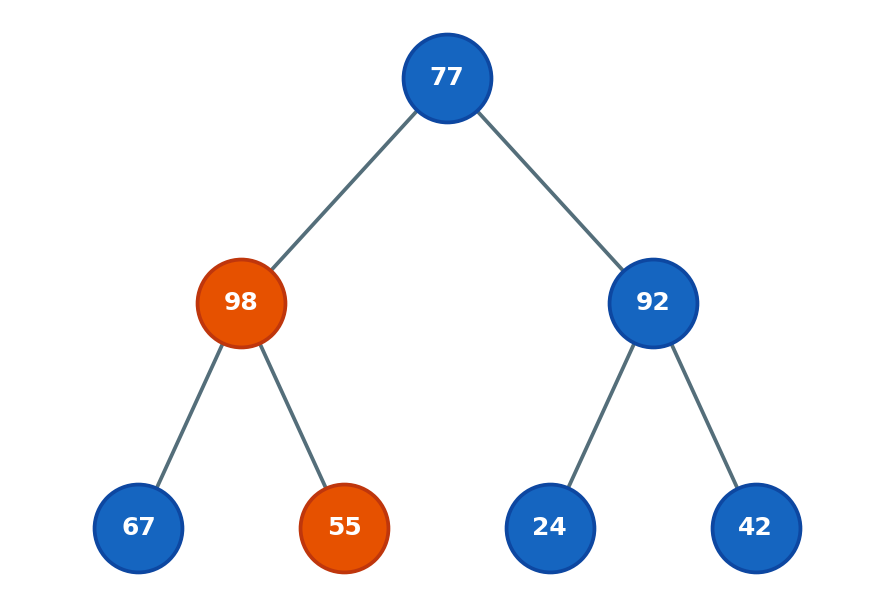
Heapify Example: Process i = 0
i = 0 (node 77): children are 98 (index 1) and 92 (index 2)
Largest child is 98: 98 > 77, swap 77 and 98
77 sinks to index 1; children of index 1 are 67 and 55: both smaller, stop
Final:
[98, 77, 92, 67, 55, 24, 42]: valid max-heap
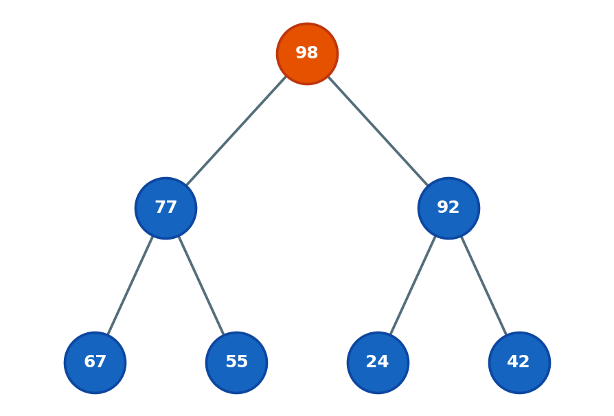
Heapify Code and Complexity
void heapify(int arr[], int n) {
for (int i = n / 2 - 1; i >= 0; --i)
siftDown(arr, n, i); // every internal node, bottom-up
}Complexity is O(N), not O(N log N)
~N/2 leaf nodes do zero work
~N/4 nodes one level up do at most 1 swap each
~N/8 nodes two levels up do at most 2 swaps each
Total sums to a convergent geometric series: O(N)
Heapsort Overview
Heapsort uses the heap to sort an array in-place
Phase 1: heapify the array: largest element rises to root. Cost: O(N)
Phase 2: repeat N − 1 times: swap root (current max) with last active element, shrink heap by one, sift new root down. Cost: O(N log N)
Each swap permanently places one element in its final sorted position at the back
Total: O(N log N), in-place, O(1) extra space, not stable
Heapsort: Phase 1: Heapify
Input:
[4, 10, 3, 5, 1, 2]Apply heapify: 10 rises to the root
Result:
[10, 5, 3, 4, 1, 2]Ready to begin extractions
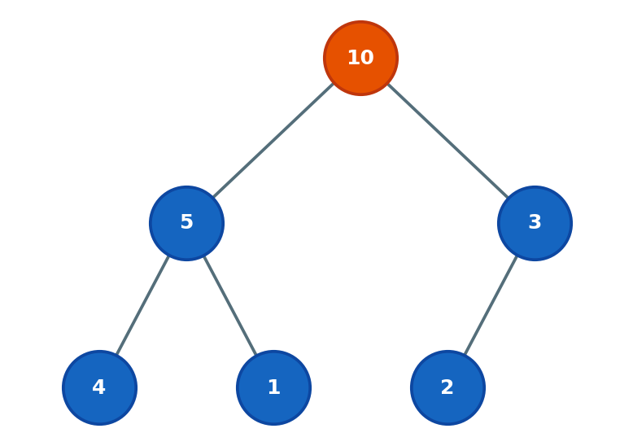
Heapsort: First Extraction
swap(arr[0], arr[5]): 10 goes to its final position (gray); heap size = 5
Sift 2 down: 2 < 5, swap; 2 < 4, swap
Active heap:
[5, 4, 3, 2, 1]
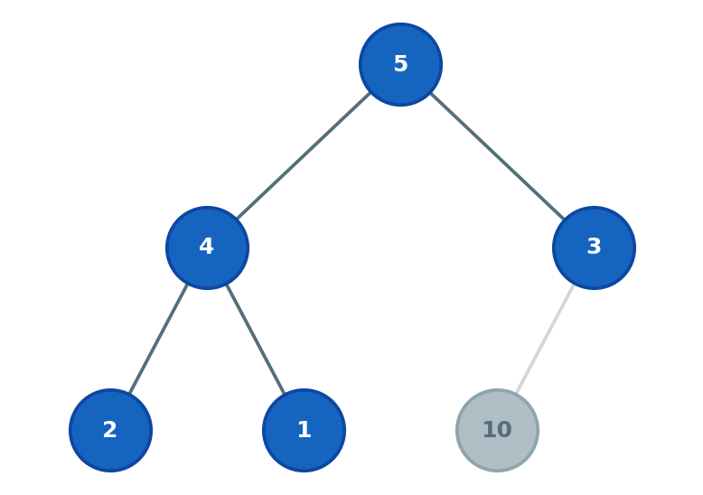
Heapsort: Second Extraction
swap(arr[0], arr[4]): 5 goes to its final position; heap size = 4
Sift 1 down: 1 < 4, swap
Active heap:
[4, 2, 3, 1]
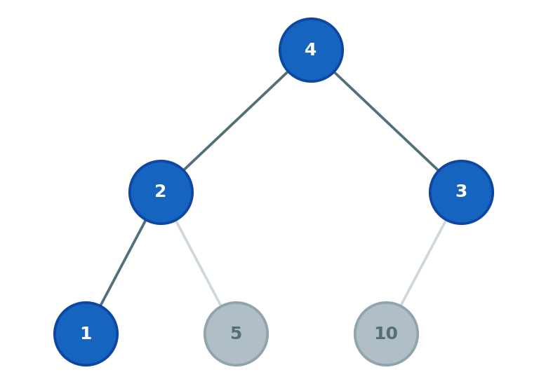
Heapsort: Third Extraction
swap(arr[0], arr[3]): 4 goes to its final position; heap size = 3
Sift 1 down: 1 < 3, swap; children of index 2 are out of heap, stop
Active heap:
[3, 2, 1]Continue: extract 3, extract 2, one element left: done
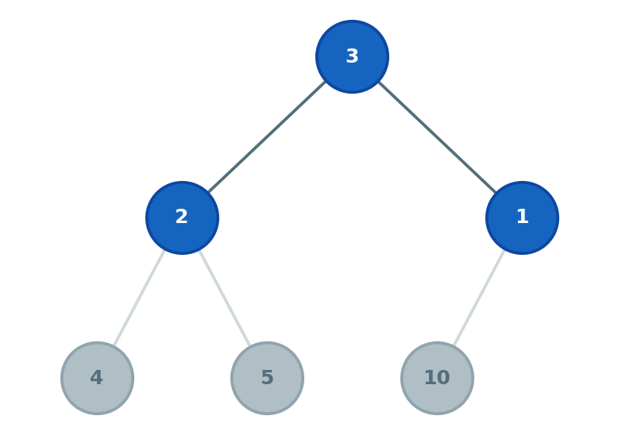
Heapsort: Sorted Result
All nodes are in sorted position: no active heap remains
Sorted in-place: no extra array needed
Final result:
[1, 2, 3, 4, 5, 10]
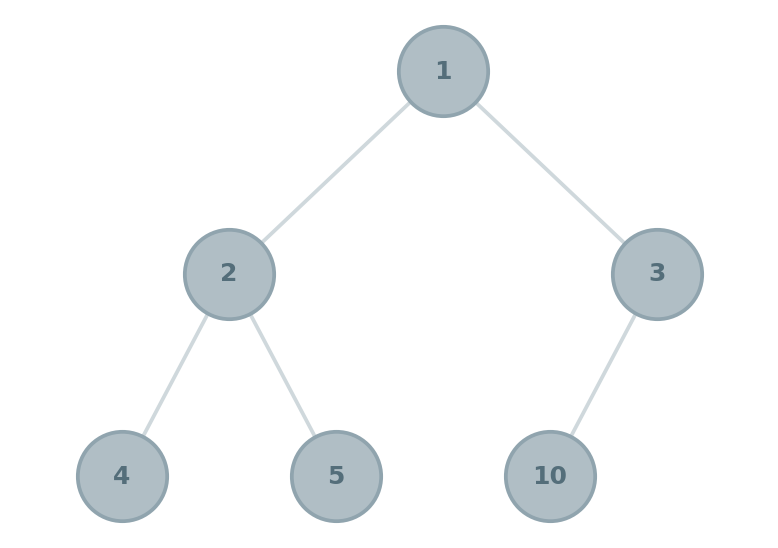
Heapsort Implementation
void heapSort(int arr[], int n) {
// Phase 1: build max-heap in O(N)
for (int i = n / 2 - 1; i >= 0; --i)
siftDown(arr, n, i);
// Phase 2: extract elements one by one
for (int end = n - 1; end > 0; --end) {
swap(arr[0], arr[end]); // max to its final position
siftDown(arr, end, 0); // heap is now [0..end-1]
}
}siftDown(arr, end, 0)passesendas heap size: sorted region at the back is never touchedWorst-case O(N log N): no degenerate cases like quicksort
Priority Queue Concept
A priority queue serves items by priority, not by insertion order
Enqueue: add an item with an associated priority value
Dequeue: remove and return the item with the highest priority
Unlike a regular queue (FIFO), arrival order does not determine service order
Example: hospital ER serves patients by medical urgency, not arrival time
Example: OS scheduler always runs the highest-priority process next
Priority Queue Operations
| Operation | Description | Example queue [42, 61, 98] |
|---|---|---|
| Enqueue | Insert by priority | Enqueue(87) → [42, 61, 87, 98] |
| Dequeue | Remove and return highest priority | Dequeue() → returns 42 |
| Peek | Read highest priority without removing | Peek() → returns 42 |
| IsEmpty | True if no items remain | Returns false |
| GetLength | Number of items | Returns 3 |
Heap as Priority Queue
A heap maps directly onto priority queue operations
| Operation | Heap function | Time |
|---|---|---|
| Enqueue | Insert + percolate up | O(log N) |
| Dequeue | Remove root + percolate down | O(log N) |
| Peek | Read arr[0] | O(1) |
| IsEmpty | Check heap size == 0 | O(1) |
| GetLength | Return heap size | O(1) |
Max-Heap vs Min-Heap for Priority Queues
The choice depends on what "highest priority" means in your application
Use a max-heap: when larger values mean higher priority
Job scheduler where higher urgency score runs first
Use a min-heap: when smaller values mean higher priority
Dijkstra's algorithm always expands the node with the smallest known distance
Tech support queue where lower ticket number is served first
The data structure is identical: only the comparison direction changes
All runtimes remain O(log N) for enqueue and dequeue regardless of choice
Key Takeaways
Heap: complete binary tree where each node ≥ (max-heap) or ≤ (min-heap) its children; root holds max or min in O(1)
Insert / Remove: both O(log N), using percolation to restore heap property
Insert: add at last position, percolate up
Remove: copy last node to root, percolate down
Array storage: parent at ⌊(i − 1)/2⌋; children at 2i + 1 and 2i + 2
Heapify: builds valid heap from any array in O(N), bottom-up sift-down
Heapsort: heapify + N − 1 root extractions = O(N log N), in-place, not stable
Priority queue: enqueue = insert, dequeue = remove; use max- or min-heap based on priority convention